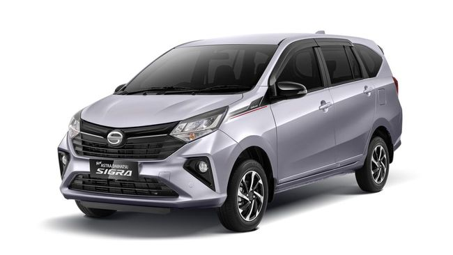

.jpg)
Daihatsu Sigra
TENTANG DAIHATSU SIGRA
Daihatsu Sigra pertama kali hadir di Indonesia pada 2016 lalu, bersamaan dengan Toyota Calya. Menariknya, nama keduanya diambil dari bahasa Sansakerta.Bahasa ini termasuk dominan di era kerajaan Hindu seperti Kutai dan Tarumanegara. Jika diartikan dalam Bahasa Indonesia, Calya artinya sempurna dan Sigra berarti respon cepat.Mengenai bahan pembuatannya, dua mobil tersebut diklaim punya kandungan lokal banyak, di mana hampir mencapai 100 persen.Uniknya, Sigra tidak mengandalkan double blower AC, melainkan air circulator di atas bangku penumpang baris kedua.Alasan penyematan fitur tersebut yaitu untuk membuat harga Sigra tetap terjangkau sebagai mobil LCGC. Selain itu, headlamp-nya sendiri belum mengusung teknologi LED.
FACELIFT PERTAMA DAIHATSU SIGRA Pada tahun 2019, Sigra mengalami facelift pertama dengan pembaruan pada headlamp-nya yang sudah berteknologi LED.Headlamp ini dapat memberi pencahayaan yang terang saat mobil dibawa berkendara di malam hari ataupun cuaca gelap.Di sisi lain, Sigra 2019 turut disematkan fitur yang diklaim pertama di kelas LCGC; head unit 2DIN touch screen (layar sentuh) audio dan retracable mirro
FACELIFT KEDUA DAIHATSU SIGRA Pada 2022, Sigra mendapat pembaruan kedua dengan harga yang masih terjangkau, di bawah Rp200 juta.Mobil ini kini hadir dalam pilihan warna baru, yaitu Scarlett Red Metallic. Warma tersebut melengkapi enam warna sebelumnya, antara lain Glittering Silver Metallic, Icy White Solid, Orange Metallic, Ultra Black Solid, Dark Grey Metallic, serta Bronze Metallic.
Berikut ini adalah kelebihan dan kekurangan Daihatsu Sigra :
Kelebihan :
- Punya kabin luas.
- Harga Terjangkau.
- Tawarkan banyak varian dan tipe.
- Fitur semakin lengkap. darah.
Kekurangan :
- Ruang kaki baris ketiga sempit.
- Mesin biasa saja.
Daftar Harga
| Harga | Varian | |
|---|---|---|
| CC | Tipe | |
| 129,5 Juta OTR | 1,0 MT | D |
| 140 Juta OTR | 1,0 MT | M |
| 149,6 Juta OTR | 1,2 MT | X |
| 162,8 Juta OTR | 1,2 AT | X |
| 155,2 Juta OTR | 1,2 Delxe MT | X |
| 168,3 Juta OTR | 1,2 Delxe AT | X |
| 156,2 Juta OTR | 1,2 MT | R |
| 170,9 Juta OTR | 1,2 AT | R |
| 160 Juta OTR | 1,2 Deluxe MT | R |
| 174,7 Juta OTR | 1,2 Deluxe AT | R |